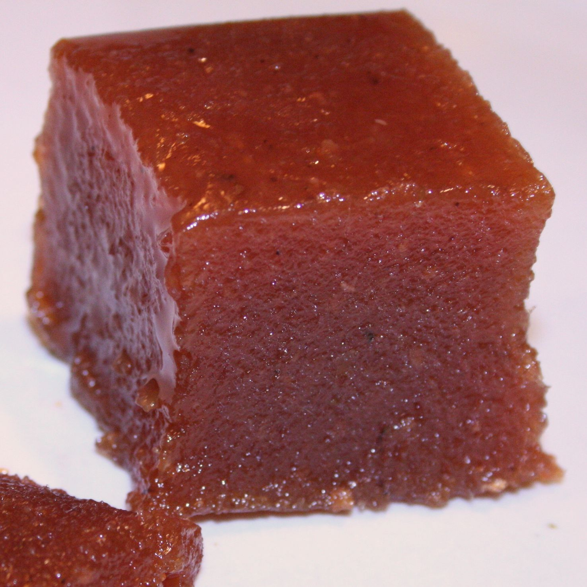
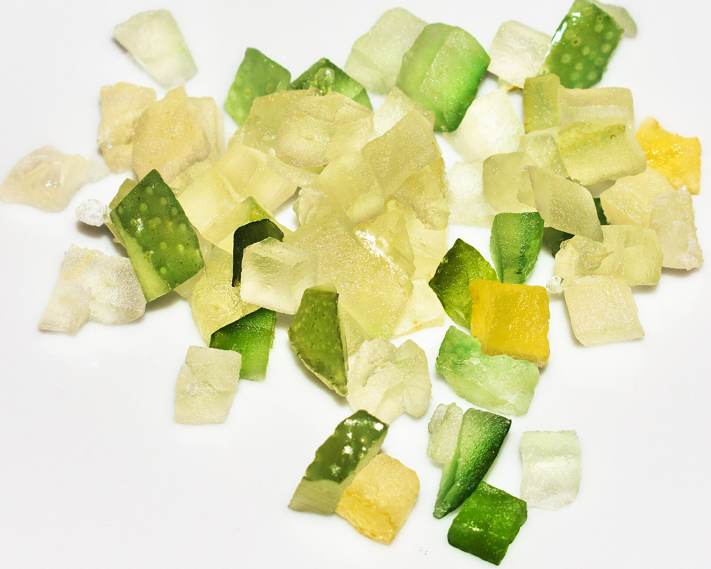
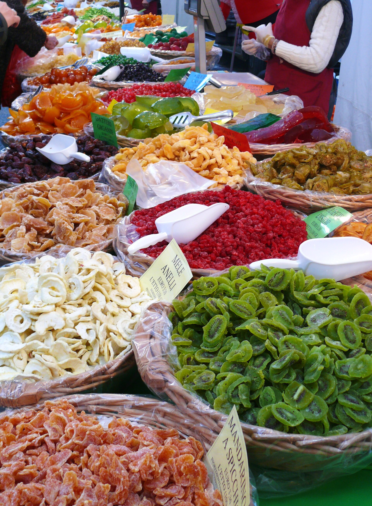
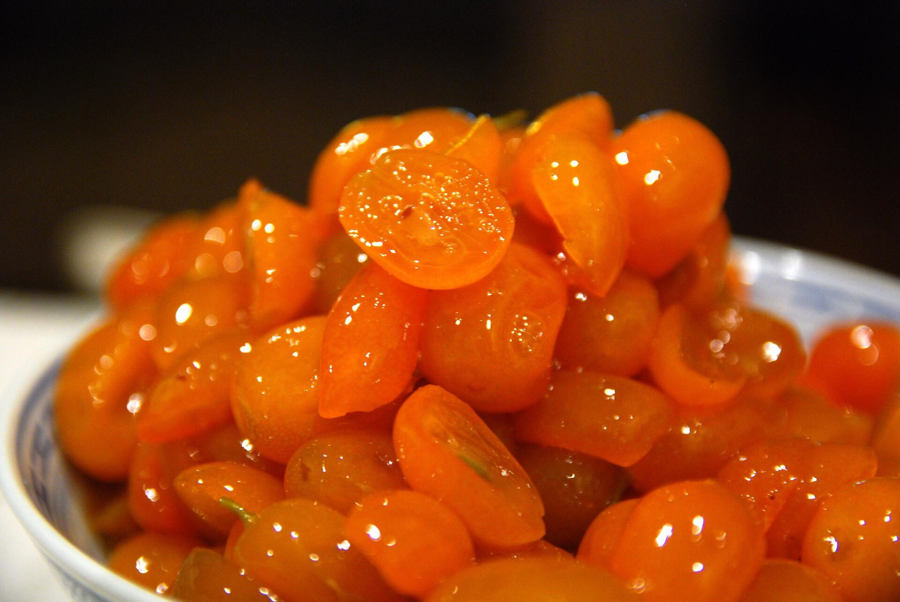

半線鹹酸甜・糖漬組講義
糖漬檸檬
鹽漬組用鹽，我們用糖。兩組做的是同一件事：把水從食物裡「搶走」，讓壞菌活不下去。但糖和鹽搶水的方式不同，留下來的味道、故事與代價也不同。

01為什麼糖能保存食物？
微生物和我們一樣需要水才能活。但不是食物裡「有水」就夠了，而是要有可以自由使用的水。當大量的糖溶在水裡，水分子會被糖分子緊緊抓住，微生物能用的水就變少了；同時，食物細胞裡的水也會被濃糖液「拉」出來（滲透作用），這就是為什麼糖放下去之後，檸檬會慢慢出汁。
食品科學用水活性（water activity，寫作 aw）來表示「可以被使用的水」有多少：純水是 1.0，越低代表越乾。常見的參考值是：
| 誰 | 大約需要的最低水活性 |
|---|---|
| 多數細菌 | 0.91 以上 |
| 多數酵母 | 0.88 以上 |
| 多數黴菌 | 0.80 以上 |
| 果醬、柑橘醬（成品） | 約 0.75～0.80 |
| 蜂蜜 | 約 0.5～0.6，微生物幾乎無法繁殖 |
美國食品藥物管理局（FDA）的規範裡，水活性在 0.85 以下的食品，一般不需要靠冷藏來確保安全。但要注意：我們今天做的糖漬檸檬，糖和檸檬大約是 1：1，而且沒有熬煮，水活性不會像熬過的果醬那麼低。所以它不能像蜂蜜一樣放在室溫好幾年，糖溶化之後就要冷藏。有一類「嗜糖酵母」特別耐高糖，是果醬、糖漿偶爾會發酵、冒泡的原因。
02鹽漬與糖漬，哪裡一樣、哪裡不一樣？
| 鹽漬（鹽漬組） | 糖漬（我們） | |
|---|---|---|
| 共同原理 | 高濃度溶液把水從食物細胞拉出來，並讓微生物能用的水變少。 | |
| 對微生物的態度 | 挑選：壞菌受不了鹹，耐鹽的乳酸菌留下來發酵，讓整罐變酸、變香。 | 擋住：希望什麼都不要長。如果開始冒泡、有酒味，代表酵母在發酵，糖不夠或不夠乾淨。 |
| 要多久 | 一週可嚐，三、四週更圓潤。 | 糖溶化約一到三天，一週左右可以喝。 |
| 吃哪裡 | 主要吃皮，當調味料。 | 果片與糖漿都吃，泡水、配甜點。 |
| 過去的代價 | 鹽在很多地方曾經是專賣品、要繳稅。 | 糖在很長一段時間是奢侈品，後來變便宜，背後卻是殖民地的甘蔗園。 |
03從蜂蜜到砂糖：甜的保存史
在砂糖普及以前，人們用蜂蜜保存水果。羅馬時代的食譜集《阿皮基烏斯》（Apicius）裡就有用蜂蜜慢煮榲桲（quince，一種很酸、很硬的水果）的做法。
英文的 marmalade（柑橘醬）這個字，藏著一段很長的旅程：古希臘文 melimēlon 是「蜂蜜」（meli）加上「蘋果」（mēlon）；到了拉丁文成為 melimelum；葡萄牙文的榲桲叫 marmelo，榲桲做成的果糕叫 marmelada；英文借了這個字，最早指的也是可以切片的榲桲糕，很久以後才變成我們熟悉的柳橙醬。西班牙人到今天還在吃這種果糕，叫做 membrillo，常配著起司一起吃。


砂糖從印度一帶出發，經過阿拉伯世界傳到地中海。義大利、法國發展出糖漬水果（frutta candita）與糖漬果皮，原本是捨不得丟掉的柑橘皮，一煮再煮、一層一層吸飽糖，變成昂貴的點心材料。
在東亞，韓國的「청」（cheong）是把水果與等重的糖或蜂蜜層層疊放，不加熱，靜置成糖漿；冬天沖熱水喝的「柚子茶」就是柚子清（유자청）。今天糖漬組的做法，和韓國家庭醃柚子、醃梅子的方法幾乎一樣。

04糖的另一面
今天一包砂糖很便宜，但這是很晚近的事。美國人類學家西敏司（Sidney Mintz）在《甜與權力》（Sweetness and Power，1985）裡追問：糖為什麼會從歐洲貴族餐桌上的稀有奢侈品，在十八、十九世紀變成英國工人每天都離不開的熱量來源？他的答案是：便宜的糖，來自加勒比海殖民地的甘蔗園，而在那裡砍甘蔗、熬糖的，是被販賣過去的非洲奴隸。
台灣也是這段歷史的一部分。荷蘭東印度公司統治台灣時，招募漢人來台種甘蔗、製糖。1652 年，台灣的糖外銷量達到約 8 萬擔（約 4,800 公噸），主要賣往日本，後來也大量銷往波斯；甘蔗田的面積一度達到稻田的三分之一。後來的日治時期，糖業更成為殖民經濟的核心，這段歷史一路延續到今天的台糖。
咖啡和糖都是「熱帶生產、溫帶消費」的商品，價格都在遙遠的市場決定。上週你經營了一家咖啡品牌；如果換成一家糖廠，你覺得故事會不會很像？哪裡不一樣？
也請想想：糖漬的初衷是珍惜盛產的水果，但當糖本身的生產建立在剝削之上，「珍惜」這件事還單純嗎？
05鹹酸甜：我們家鄉的蜜餞
你有沒有注意到，這門實作課的老名字叫做「半線鹹酸甜」？「半線」是彰化的舊地名，而「鹹酸甜」（kiâm-sng-tinn）就是台語的「蜜餞」。在福建也叫「酸鹹甜」，廣東則叫「涼果」。
彰化員林被稱為「蜜餞的故鄉」。根據地方記載，日治時期的員林是柑橘、楊桃等水果的重要集散地，水果要靠火車運往南北各地，路上一耽擱，整簍水果就爛掉了；百果山下的果農於是想辦法，把水果醃成蜜餞保存。日治時期員林業者做的「李仔糕」，還曾在全國名產贈答品展覽會得到一等賞金牌。戰後，1947 年從福建來台的洪錫佛，看到員林大量水果來不及吃就腐壞，開始用鹽醃製、加工，後來被稱為「蜜餞之父」。到了 1982 年，光是員林就有超過一百家蜜餞工廠，一度超越台南，成為全台最大的蜜餞產地。
台南也有百年蜜餞老店：安平的林永泰興創立於清光緒 8 年（1882 年），創辦人原本以捕魚為生，在漁閒時醃漬蜜餞販賣。

最有意思的是傳統蜜餞的做法：先鹽，後糖。以青梅為例，果實要先用鹽水醃上三到六個月，做成「鹽胚」，讓水果可以放上很久；要加工時再曬乾、用清水「漂水」把多餘的鹽和澀味洗掉，最後才放進糖液裡糖漬。所以「鹹酸甜」這三個字，其實就是今天兩組實作加起來的結果：鹽漬組的鹹、檸檬的酸、糖漬組的甜。
06食譜：糖漬檸檬
材料（每組）
- 檸檬 4 顆（約 400～500 公克）
- 白砂糖：和檸檬等重（檸檬 450 公克，糖就是 450 公克）
- 玻璃罐一個、刀、砧板、廚房紙巾、電子秤
1. 準備程序
- 將玻璃罐洗淨，放入滾水中消毒五分鐘。小心取出，完全風乾。（小心燙傷！！！）
- 檸檬外表仔細刷洗乾淨，用紙巾擦到完全沒有水。
- 刀子與砧板清洗乾淨、擦乾。
2. 製作
- 檸檬切掉頭尾，切成約 3～4 公釐的薄片。
- 挑掉檸檬籽（籽會讓糖漿變苦）。
- 秤檸檬片的重量，再秤出等重的糖。
- 罐底先鋪一層糖，再一層檸檬片、一層糖，交錯疊上去。
- 最上面用厚厚一層糖封頂，蓋上蓋子。
3. 等待
放在陰涼處一到兩天，每天輕輕搖晃或倒置幾次，讓糖慢慢溶化。等糖大致溶成糖漿後，移到冰箱冷藏，約一週後就可以喝。
- 水是糖漬的敵人。罐子、檸檬、刀子都要乾。多出來的水會稀釋糖，讓酵母有機會發酵。
- 如果開始冒小泡泡、聞到酒味，代表酵母在發酵；如果長出毛茸茸的黴，整罐就不要吃了。
- 拿取時用乾淨、乾燥的湯匙。
- 這種沒有熬煮的糖漬，冷藏後建議一個月內吃完（這是保守的建議，不同食譜說法從幾週到幾個月都有）。
- 想更快溶化可以用細砂糖；用冰糖溶得比較慢，但糖漿比較清澈。
07怎麼吃？
- 檸檬水：一、兩匙糖漿加一片檸檬，沖冷水、熱水或氣泡水。
- 愛玉檸檬：淋在愛玉或仙草上，這是台灣人自己的吃法。
- 配優格、鬆餅：糖漬檸檬片切碎，拌進優格，或放在鬆餅上。
- 烤蛋糕：瀝乾的檸檬片可以鋪在磅蛋糕上一起烤。
也別忘了：糖漿就是糖。世界衛生組織建議，每天從「游離糖」（加進食物裡的糖，以及蜂蜜、糖漿、果汁裡的糖）攝取的熱量最好少於總熱量的 10%，能降到 5% 以下更好。糖漬是一種保存的智慧，不是喝很多也沒關係的理由。
08一週觀察紀錄
請把罐子當成一個小實驗，每次觀察都寫下時間與你注意到的事。
| 時間 | 糖（剩多少沒溶） | 糖漿（顏色、清濁） | 氣味（有沒有酒味） | 檸檬片（軟硬、透明度） |
|---|---|---|---|---|
| 第 0 天（今天） | ||||
| 第 1～2 天 | ||||
| 第 7 天 | ||||
| 第 3～4 週 |
最後，也請去嚐一口鹽漬組的檸檬：同一種水果，一罐放鹽、一罐放糖，結果有多不一樣？如果把兩罐加在一起呢？
參考資料延伸閱讀與出處
- Sidney W. Mintz (1985). Sweetness and Power: The Place of Sugar in Modern History. New York: Viking.
- AQUALAB. How Water Activity Controls Microbial Growth（水活性與微生物生長的參考值）.
- Wiktionary. marmalade（字源）；Wikipedia. Marmalade、Cheong (food).
- 維基百科〈臺灣糖業史〉。
- 欣傳媒〈台灣蜜餞歷史｜讓日本人也說讚的鹹酸甜滋味，台灣蜜餞推手是他！〉。
- 國家文化記憶庫〈林永泰興蜜餞行〉。
- 自由時報食譜自由配〈流傳已久的好滋味！常吃的古早味蜜餞有這些…〉（蜜餞製程）。
- World Health Organization (2015). Guideline: Sugars intake for adults and children.